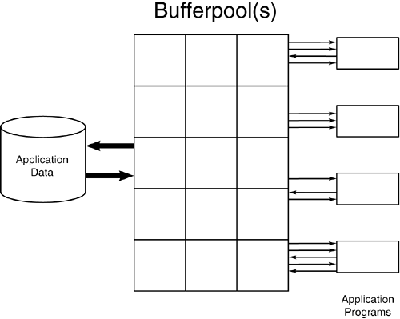
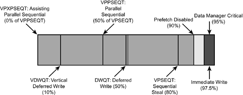
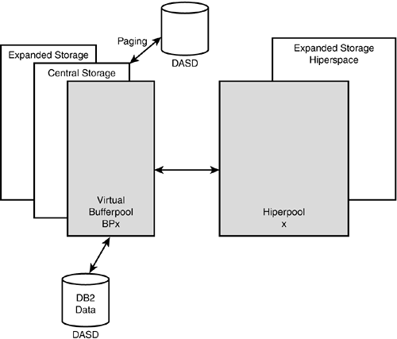
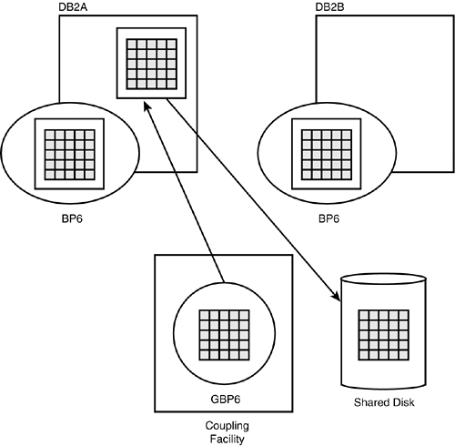

|
|
< Day Day Up > |
|
Tuning the DB2 SubsystemThe first level of DB2 tuning to be discussed in this chapter is at the DB2 subsystem level. This type of tuning is generally performed by a DB2 systems programmer or database administrator. Several techniques can be used to tune DB2 itself. These techniques can be broken down into three basic categories:
Each of these tuning methods is covered in the following sections. Tuning the DB2 CatalogOne of the major factors influencing overall DB2 subsystem performance is the physical condition of the DB2 Catalog and DB2 Directory tablespaces. These tablespaces are not like regular DB2 tablespaces.
DB2 does not make use of indexes when it accesses the DB2 Catalog for internal use. For example, binding, DDL execution, and authorization checking do not use DB2 indexes. Instead, DB2 traverses pointers, or links, maintained in the DB2 Catalog. These pointers make internal access to the DB2 Catalog very efficient. The DB2 Catalog indexes are used only by users issuing queries against DB2 Catalog tables. Whether these indexes are used or not is based on the optimization of the DB2 Catalog queries and whether the DB2 optimizer deems that they are beneficial. Although it is difficult to directly influence the efficiency of internal access to the DB2 Catalog and DB2 Directory, certain measures can be taken to eliminate obstructions to performance. For instance, follow proper data set placement procedures to reduce DASD head contention. The DB2 Catalog is central to most facets of DB2 processing. It records the existence of every object used by DB2. As such, it is often queried by DBAs, programmers, and ad hoc users. Large queries against the DB2 Catalog can cause performance degradation.
Additionally, many DB2 add-on tools access the DB2 Catalog as they execute, which can result in a bottleneck. Because the DB2 Catalog provides a centralized repository of information on all objects defined to DB2, it is natural for programmers, analysts, and managers to request access to the DB2 Catalog tables for queries. This can cause contention and reduce performance.
Finally, remember that when DB2 objects are created, DB2 must read and update several DB2 Catalog tables. This results in many locks on DB2 Catalog pages as the objects are being built. To reduce contention and the resultant timeouts and deadlocks, schedule all DDL during off-peak processing periods (for example, in the early morning after the batch cycle but before the first online use, or over the weekend). DSNZPARMsThe makeup of the DB2 environment is driven by a series of system parameters specified when DB2 is started. These system parameters are commonly referred to as DSNZPARMs, or ZPARMs for short. The DSNZPARMs define the settings for many performance-related items. Several of the ZPARMs influence overall system performance.
NOTE Prior to DB2 V3, buffer pool specifications were coded into the ZPARMs. For DB2 V3 and subsequent versions they are set using the ALTER BUFFERPOOL command. A complete listing of DSNZPARM parameters can be found Appendix C of the IBM DB2 Installation Guide. TracesTraces can be started automatically based on DSNZPARM specifications. Most shops use this feature to ensure that certain DB2 trace information is always available to track performance problems. The DSNZPARM options for automatically starting traces are AUDITST, TRACSTR, SMFACCT, SMFSTAT, and MON.
DB2 traces can be started by IFCID. The acronym IFCID stands for Instrumentation Facility Component Identifier. An IFCID basically names a single traceable event in DB2. By specifying IFCIDs when starting a trace, you can limit the amount of information collected to just those events you need to trace. LockingLock escalation thresholds are set by the following DSNZPARM options of the system parameters:
Lock escalation can also be controlled on a tablespace-by-tablespace basis using the LOCKMAX parameter. Information on the LOCKMAX parameter can be found in Chapter 5. When specified, the LOCKMAX parameter overrides NUMLKTS. LoggingThe parameters that define DB2's logging features are also specified in the DSNZPARMs. Options can be used to affect the frequency of writing log buffers and the size of the log buffers. The DSNZPARM options that affect DB2 logging are CHKFREQ, INBUFF, and LOGAPSTG. DB2 fills log buffers and eventually the log records are written to an active log data set. The write occurs when the buffers fill up, when the write threshold is reached or when the DB2 subsystem forces the log buffer to be written. The LOGAPSTG parameter represents the maximum DBM1 storage that can be used by the fast log-apply process. The default value is 0MB, which means that the fast log-apply process is disabled except during DB2 restart. During DB2 restart, the fast log-apply process is always enabled.
TimeoutsThe amount of time to wait for an unavailable resource to become available before timing out is controlled by the DSNZPARM value, IRLMRWT. When one user has a lock on a DB2 resource that another user needs, DB2 waits for the time specified by IRLMRWT and then issues a -911 or -913 SQLCODE.
Additionally, the UTIMOUT parameter can be used to indicate the number of resource timeout cycles that a utility will wait for a drain lock before timing out.
Active UsersThe number of active users can be controlled by the DSNZPARM settings, including the following:
EDM PoolThe size of the EDM pool is specified in the DSNZPARM value named EDMPOOL. The use of the EDM pool and its requirements are described in Chapter 27, "Tuning DB2's Environment," in the section titled "Tuning Memory Use." Drowning in a Buffer Pool of TearsThe single most critical system-related factor influencing DB2 performance is the setup of sufficient buffer pools. A buffer pool acts as a cache between DB2 and the physical disk storage devices on which the data resides. After data has been read, the DB2 Buffer Manager places the page into a buffer pool page stored in memory. Buffer pools, therefore, reduce the impact of I/O on the system by enabling DB2 to read and write data to memory locations synchronously, while performing time-intensive physical I/O asynchronously. Through judicious management of the buffer pools, DB2 can keep the most recently used pages of data in memory so that they can be reused without incurring additional I/O. A page of data can remain in the buffer pool for quite some time, as long as it is being accessed frequently. Figure 28.1 shows pages of data being read into the buffer pool and reused by multiple programs before finally being written back to disk. Processing is more efficient as physical I/Os decrease and buffer pool I/Os increase. Figure 28.1. DB2 buffer pool processing. How does the buffer pool work? DB2 performs all I/O-related operations under the control of its Buffer Manager component. As pages are read, they are placed into pages in the buffer pool using a hashing algorithm based on an identifier for the data set and the number of the page in the data set. When data is subsequently requested, DB2 can check the buffer pool quickly using hashing techniques. This provides efficient data retrieval. Additionally, DB2 data modification operations write to the buffer pool, which is more efficient than writing directly to DASD. How does DB2 keep track of what data is updated in the buffer pool? This is accomplished by attaching a state to each buffer pool page: available or not available. An available buffer page meets the following two criteria:
An unavailable page is one that does not meet one of these criteria because it has either been updated and not yet written to disk, or it is currently in use. When a page is available, it is said to be available for stealing. Stealing is the process whereby DB2 replaces the current data in a buffer page with a different page of data. Usually, the least recently used available buffer page is stolen first (but it depends on the stealing algorithm used for the buffer pool). DB2 provide 80 buffer pools to monitor, tune, and tweak. Although every shop's usage of buffer pools differs, some basic ideas can be used to separate different types of processing into disparate buffer pools. Consult Table 28.1 for one possible buffer pool usage scenario. This is just one possible scenario and is not a general recommendation for buffer pool allocation. I will examine several aspects of this scenario. The first buffer pool, BP0, should be reserved for system data sets such as the DB2 Catalog, QMF control tables, and Resource Limit Specification Tables. By isolating these resources into a separate buffer pool, system data pages will not contend for the same buffer pool space as application data pages.
Likewise, a single buffer pool (for example, BP7) can be set aside for sorting. If your environment requires many large sorts that use physical work files, isolating DSNDB07 (the sort work database) in its own buffer pool may be beneficial. This is accomplished by assigning all DSNDB07 tablespaces to the targeted buffer pool (BP7). Another technique for the allocation of buffer pools is to use separate buffer pools for indexes and tablespaces. This can be accomplished by creating tablespaces in one buffer pool (for example, BP1) and indexes in another (for example, BP2). The idea behind this strategy is to enable DB2 to maintain more frequently accessed data by type of object. For instance, if indexes are isolated in their own buffer pool, large sequential prefetch requests do not cause index pages to be flushed, because the sequential prefetch is occurring in a different buffer pool. Thus, index pages usually remain in memory longer, which increases performance for indexed access. You can further tune your buffer pool usage strategy by isolating random access from sequential access. Consider using say, BP1 and BP2 for objects that are predominantly accessed sequentially, and say, BP8 and BP9 for randomly accessed objects. It is then possible to further tune the buffer pool parameters so that each type of buffer pool is optimized for the predominant type of access (that is, random or sequential). Tables providing specialized functions can also be isolated. This is depicted by BP5 and BP6. Because these tables are very frequently accessed, they are often the cause of I/O bottlenecks that negatively impact performance. Creating the tablespaces for these tables in a specialized buffer pool can allow the entire table to remain in memory, vastly improving online performance. Additionally, the isolation of specialized tables into their own buffer pools enables pinpoint tuning for these frequently accessed tables (and indexes). General-purpose tables (and their associated indexes) accessed by multiple programs are good candidates for this type of strategy. Following are some examples:
It is usually a wise idea to use multiple buffer pools for different types of processing. This should minimize buffer pool page contention. In the example, BP5 is used to isolate one heavily accessed tablespace and/or index in its own buffer pool. Isolating a page set this way can ensure that no other processing will steal its buffer pages. Likewise, you may want to use a single buffer pool per application, such as BP6 in the example. Isolating all of that application's objects into its own buffer pool can eliminate or reduce the instances where one application monopolizes a buffer pool to the detriment of another application using the same buffer pool. It can also make application monitoring easier because all I/O is through a single buffer pool. The remaining buffer pools (BP11 through BP49) can be used to further isolate specific objects or for further tuning. The DB2 buffer pools have a huge impact on performance. There are several schools of thought on how best to implement DB2 buffer pools. For example, you may want to consider using separate buffer pools to do the following:
CAUTION Be careful that you do not allocate too many buffer pools. It is possible to allocate too many buffer pools to adequately manage. Be sure to align your performance needs for multiple buffer pools with your available administrative resources for monitoring and tuning those buffer pools. One Large Buffer Pool?The general recommendation from consultants and some IBM engineers in years past was to use only BP0, specifying one very large buffer pool for all DB2 page sets. This strategy turns over to DB2 the entire control for buffer pool management. Because DB2 uses efficient buffer-handling techniques, the theory was that good performance could be achieved using a single large buffer pool. In the olden days of DB2, this strategy worked fairly well. When only a few, small applications used DB2, it could manage a fairly efficient single buffer pool. Today though, only some very small DB2 implementations can get by with one large buffer pool, using BP0 and letting DB2 do the buffer pool management. The days when most shops employed the single buffer pool strategy are over. As the amount of data stored in DB2 databases increases, specialized types of tuning are necessary to optimize data access. This usually results in the implementation of multiple buffer pools. Why else would IBM provide 80 of them?
If your shop is memory constrained, or you have limited practical experience with DB2 buffer pools, you might want to consider starting with one DB2 buffer pool and then experimenting with specialized buffer pool strategies as you acquire additional memory and practical expertise. Notes on Multiple Buffer Pool UseThe following guidelines are helpful when allocating multiple buffer pools at your shop. Ensure That Sufficient Memory Is AvailableBefore implementing multiple buffer pools, be sure that your environment has the memory to back up the buffer pools. The specification of large buffer pools without sufficient memory to back them up can cause paging. Paging to DASD is extremely nasty and should be avoided at all costs. Document Buffer Pool AssignmentsBe sure to keep track of which DB2 objects are assigned to which buffer pool. Failure to do so can result in confusion. Of course, DB2 Catalog queries can be used for obtaining this information. Modify Buffer Pools to Reflect Processing RequirementsDefining multiple buffer pools so that they are used optimally throughout the day is difficult. For example, suppose that DSNDB07 is assigned to its own buffer pool. Because sorting activity is generally much higher during the batch window than during the day, buffers assigned to DSNDB07 can go unused during the transaction processing window. Another example is when you assign tables used heavily in the online world to their own buffer pool. Online transaction processing usually subsides (or stops entirely) when nightly batch jobs are running. Online tables might be accessed sparingly in batch, if at all. This causes the buffers assigned for those online tables to go unused during batch processing. Unless you are using one large BP0, it is difficult to use resources optimally during the entire processing day. Ask yourself if the performance gained by the use of multiple buffer pools offsets the potential for wasted resources. Quite often, the answer is a resounding "Yes." DB2 provides the capability to dynamically modify the size of buffer pools using the ALTER BUFFERPOOL command. Consider using ALTER BUFFERPOOL to change buffer pool sizes to reflect the type of processing being performed. For example, to optimize the DSNDB07 scenario mentioned previously, try the following:
The execution of these commands can be automated so that the appropriate buffer pool allocations are automatically invoked at the appropriate time in the batch schedule. Buffer Pool ParametersDB2 provides many buffer pool tuning options that can be set using the ALTER BUFFERPOOL command. These options are described in the following paragraphs. The first parameter, VPSIZE, is arguably the most important. It defines the size of the individual virtual pool. The value can range from 0 to 400,000 for 4K buffer pools, from 0 to 200,000 for 8K buffer pools, from 0 to 100,000 for 16K buffer pools, and from 0 to 50,000 for 32K buffer pools. The total VPSIZE for all buffer pools cannot be greater than 1.6 GB. The minimum size of BP0 is 56 because the DB2 Catalog tablespaces and indexes are required to use BP0. The capability to dynamically alter the size of a virtual pool enables DBAs to expand and contract virtual pool sizes without stopping DB2. Altering VPSIZE causes the virtual pool to be dynamically resized. If VPSIZE is altered to zero, DB2 issues a quiesce and when all activity is complete, the virtual pool is deleted. Prior to DB2 V8, virtual buffer pools can be allocated in data spaces. To accomplish this, use the VPTYPE parameter to indicate the type of buffer pool to be used. VPTYPE(DATASPACE) indicates that data spaces are to be used for the buffer pool; VPTYPE(PRIMARY) indicates that the buffer pool is to be allocated as before, in the DB2 database services address space. You should be running in 64 bit mode to take advantage of data space buffer pools.
The sequential steal threshold can be tuned using VPSEQT. VPSEQT is expressed as a percentage of the virtual pool size (VPSIZE). This number is the percentage of the virtual pool that can be monopolized by sequential processing, such as sequential prefetch. When this threshold is reached, sequential prefetch will be disabled. All subsequent reads will be performed one page at a time until the number of pages available drops below the specified threshold. The value of VPSEQT can range from 0 to 100, and the default is 80. When VPSEQT is set to 0, prefetch is disabled. Additionally, the sequential steal threshold for parallel operations can be explicitly set using VPPSEQT. This parallel sequential steal threshold is expressed as a percentage of the nonparallel sequential steal threshold (VPSEQT). The value of VPPSEQT can range from 0 to 100, and the default is 50.
The assisting parallel sequential threshold can be explicitly set using VPXPSEQT. This threshold sets the percentage of the parallel sequential threshold that is available to assist another parallel group member to process a query. The VPXPSEQT sequential threshold is expressed as a percentage of the parallel sequential steal threshold (VPPSEQT). The value of VPXPSEQT can range from 0 to 100, and the default is 0. To understand the relationship that exists among the buffer pool parameters, refer to Figure 28.2. This diagram depicts the different parameters and thresholds and their relationships to one another. Figure 28.2. The relationships among the buffer pool parameters. To better understand the buffer pool parameters, consider the impact of issuing the following command: -ALTER BUFFERPOOL BP1 VPSIZE(2000) VPSEQT(80) VPPSEQT(50) VPXPSEQT(25) The BP1 buffer pool would be set to 8MB (2000 pages each 4KB in size). The sequential steal threshold (VPSEQT) is set to 80% of the buffer pool, which is 6.4MB (1600 pages). The parallel sequential steal threshold (VPPSEQT) is set to 50% of VPSEQT, which is 3.2MB (800 pages). Finally, the assisting parallel sequential steal threshold (VPXPSEQT) is set to 25% of VPPSEQT, which is .8MB (200 pages). CAUTION Setting these parameters can be quite confusing because they are set as percentages of other parameters. Take care to ensure that you are specifying the thresholds properly. Deferred WriteDWQT can be used to specify the deferred write threshold. This threshold is expressed as a percentage of the virtual pool size (VPSIZE). It specifies when deferred writes will begin to occur. When the percentage of unavailable pages exceeds the DWQT value, pages will be written to DASD immediately (not deferred, as normal) until the number of available pages reaches 10% of (DWQTxVPSIZE). The value of DWQT can range from 0 to 100, and the default is 50. Additionally, VDWQT can be used to set the deferred write threshold per data set. VDWQT is expressed as a percentage of the virtual pool size (VPSIZE). As of DB2 V6, you can express the VDWQT threshold as an integer value instead of a percentage. When the percentage of pages containing updated data for a single data set exceeds this threshold, immediate writes will begin to occur. The value of VDWQT can range from 0 to 90 and the default is 10. This value should be less than DWQT.
Buffer Pool Page Stealing AlgorithmYou can modify the page-stealing algorithm used by DB2 virtual buffer pools using the PGSTEAL parameter. When DB2 removes a page from the buffer pool to make room for a newer page, this is called page stealing. The usual algorithm deployed by DB2 uses least-recently-used (LRU) processing for managing buffer pages. In other words, older pages are removed so more recently used pages can remain in the virtual buffer pool. However, you can choose to use a different, first-in됹irst-out (FIFO) algorithm. With FIFO, DB2 does not keep track of how often a page is referenced. The oldest pages are removed, regardless of how frequently they are referenced. This approach to page stealing results in a small decrease in the cost of doing a GETPAGE operation, and it can reduce internal DB2 latch contention in environments that require very high concurrency.
Determining Buffer Pool SizesMany database analysts and programmers are accustomed to working with buffer pools that are smaller than DB2 buffer pools (for example, IMS and VSAM buffers). DB2 just loves large buffer pools. Each shop must determine the size of its buffer pools based on the following factors:
Remember, though, that DB2 does not allocate buffer pool pages in memory until it needs them. A DB2 subsystem with very large buffer pools might not use them all of the time. As with the number of buffer pools to use, there are several schools of thought on how best to determine the size of the buffer pool. Actually, buffer pool sizing is more an art than a science. Try to allocate your buffer pools based on your projected workload and within the limitations defined by the amount of real and virtual memory available. Of course, for DB2 V8 you have much more flexibility in creating larger DB2 buffer pools than you had in the past due to the exploitation of 64-bit virtual memory. The following calculation can be used as a good rough starting point for determining the size of your DB2 buffer pools: [number of concurrent users x 80] + [(desired number of transactions per second) x (average GETPAGEs per transaction)] + [(Total # of leaf pages for all indexes) x .70] The resulting number represents the number of 4K pages to allocate for all of your buffer pools. If you are using only BP0, the entire amount can be coded for that buffer pool. If you are using multiple buffer pools, a percentage of this number must be apportioned to each buffer pool you are using. This formula is useful for estimating a buffer pool that balances the following:
Workload is factored in by the average GETPAGEs per transaction and the number of concurrent users. As workload (in terms of both number of users and amount of resources consumed) increases, so does the number of users and the average GETPAGEs per transaction. Throughput is determined by the desired number of transactions per second. The size of the buffer pool increases as you increase the desired number of transactions per second. Larger buffer pools are useful in helping to force more work through DB2. The size of the DB2 subsystem is represented by the number of index leaf pages. As the number of DB2 applications grows, the number of indexes defined for them grows also, thereby increasing the number of index leaf pages as DB2 use expands. Recommendations for determining some of these values follow. Use the value of CTHREAD to determine the number of concurrent users. If you are sure that your system rarely reaches this maximum, you can reduce your estimate for concurrent users. To estimate the number of transactions per second, use values from service-level agreement contracts for your applications. If service-level agreements are unavailable, estimate this value based on your experience and DB2-PM accounting summary reports. To get an idea of overall workload and processing spikes (such as month-end processing), produce accounting summary reports for peak activity periods (for example, the most active two-hour period) across several days and during at least five weeks. Then arrive at an average for total transactions processed during that period by adding the # OCCUR from the GRAND TOTAL line of each report and dividing by the total number of reports you created. This number is, roughly, the average number of transactions processed during the peak period. Divide this number by 7200 (the number of seconds in two hours) for the average number of transactions per second. Then double this number because the workload is probably not evenly distributed throughout the course of the two hours. Also, do not use a number that is less than 10 transactions per second. You can approximate the average number of GETPAGEs per transaction with the accounting summary or accounting detail reports (such as those provided by DB2 PM). Add all GETPAGEs for all transactions reported, and then divide this number by the total number of transactions reported. Base this estimate on transactions only들ncluding batch programs would cause a large overestimate. Online transactions are generally optimized to read a small amount of data, whereas batch jobs can read millions of pages. To determine the number of leaf pages for the indexes in your DB2 subsystem, issue the following query: SELECT SUM(NLEAF) FROM SYSIBM.SYSINDEXES; For this query to work properly, RUNSTATS statistics should be up to date and any unused objects should be excluded (using a WHERE clause). CAUTION Keep in mind that the formula just discussed for estimating buffer pool requirements should be used as just a very rough guideline. If you have the resources at your disposal, you should carefully analyze your DB2 workload requirements by reviewing each transaction and batch program in conjunction with transaction history and your batch job schedules. You can then create a model for a typical processing day and design your buffer pool strategy to meet that model. There are also tools on the market that can assist you in setting up and managing your buffer pools. Examples include BMC Software's Pool Advisor and Responsive Systems' Buffer Pool Tool. DB2 Buffer Pool GuidelinesYou can use the following guidelines to ensure an effective DB2 buffer pool specification at your shop. Be Aware of Buffer Pool ThresholdsBe aware of the following overall effects of the buffer pool thresholds:
Be Generous with Your Buffer Pool AllocationsA buffer pool that is too large is almost always better than a buffer pool that is too small. However, do not make the buffer pool so large that it requires paging to DASD. Monitor BP0 CarefullyThe DB2 Catalog and DB2 Directory are assigned to BP0. This cannot be changed. Therefore, even if other buffer pools are used for most of your application tablespaces and indexes, pay close attention to BP0. A poorly performing DB2 Catalog or DB2 Directory can severely hamper system-wide performance.
Allocate BP32KSpecify a 32K buffer pool든ven if you have no tablespaces in your system with 32K pages듮o ensure that joins requiring more than 4K can operate. If BP32K is not defined, at least with a minimal number of pages, joins referencing columns that add up to 4097 or greater can fail. The default size of BP32K is 12 pages, which is small, but perhaps a good starting place if you allow large joins. Some shops avoid allocating BP32K to ensure that large joins are not attempted. Avoiding BP32K allocation is also an option, depending on your shop standards. Be Aware of the 32K Buffer Pool NamesRemember that BP32 and BP32K are two different buffer pools. BP32 is one of the 50 4K buffer pools. BP32K is one of the 10 32K buffer pools. If you miss or add an erroneous K, you may wind up using or allocating the wrong buffer pool. Consider Reserving a Buffer Pool for TuningEven if you do not utilize multiple buffer pools, consider using your unused buffer pools for performance monitoring and tuning. When a performance problem is identified, tablespaces or indexes suspected of causing the problem can be altered to use the tuning buffer pool. Then you can turn on traces and rerun the application causing the performance problem. When monitoring the performance of the application, I/O, GETPAGEs, and the usage characteristics of the buffer pool can be monitored separately from the other buffer pools. Consider Defining a Sort Buffer Pool for DSNDB07If you assign DSNDB07 to its own buffer pool, consider the appropriate parameters to use. First of all, the VPSEQT parameter is quite useful. Recall that VPSEQT is used to set the sequential steal threshold. Since most activity to DSNDB07 is sequential, VPSEQT should be set very high, to 95 for example. But do not set VPSEQT to 100 because not all sorting activity is sequential. Furthermore, you can set the immediate write thresholds (DWQT and VDWQT) to the VPSEQT size. NOTE Setting the deferred write thresholds is tricky business. If you set them relatively high (for example, same as VPSEQT) you will maintain pages in the pools and avoid writes. However, you may want to specify very low deferred write thresholds to set up trickle write. This avoids the problems that can ensue when DB2 has to write a huge amount of data because the write was deferred. Different options will work for different companies based on your processing requirements. Finally, it is a good idea to use the BP7 buffer pool for DSNDB07 so as to minimize confusion. Because both end in the number 7, it is easy to remember that one works with the other. Optimize BP0BP0 is probably the single most important buffer pool in a DB2 subsystem. The system resources, namely the DB2 Catalog and DB2 Directory objects, are assigned to BP0 and cannot be moved. Therefore, many organizations decide to use BP0 to hold only these resources by failing to assign other objects to BP0. This is a good strategy because placing other objects into BP0 can degrade the performance of processes that access the DB2 Catalog or Directory. The size of your DB2 subsystem dictates the proper sizing of BP0. Consider starting with a VPSIZE of 2000 pages. Monitor usage of BP0 and increase VPSIZE if access patterns warrant. The proper specification of VPSEQT, DWQT, and VDWQT will depend on your shop's access patterns against the DB2 Catalog and Directory. Converting Active Buffer Pool to Use Data SpaceFor DB2 V7, you can use data spaces for virtual buffer pools. To convert an active DB2 virtual buffer pool to use a data space, perform the following steps:
Start all of the objects that were previously stopped. The total size of data space virtual buffer pools is limited to 32GB (for 4K page size). This limit is imposed because there is a maximum of 8 million "page manipulation blocks" in the DBM1 address space.
Hiperpools
Hiperpools can be considered extensions to the regular buffer pools, which are also referred to as virtual pools. Hiperpools use hiperspaces to extend DB2 virtual buffer pools. Working in conjunction with the virtual pools, hiperpools provide a second level of data caching. When old information is targeted to be discarded from (or, moved out of) the virtual buffer pool, it will be moved to the hiperpool instead (if a hiperpool has been defined for that buffer pool). Only clean pages will be moved to the hiperpool, though. Clean pages are those in which the data that was modified has already been written back to DASD. No data with pending modifications will ever reside in a hiperpool. Each of the 80 virtual pools can optionally have a hiperpool associated with it. There is a one-to-one relationship between virtual pools and hiperpools. A virtual pool can have one and only one hiperpool associated with it, but it also can have none. A hiperpool must have one and only one virtual pool associated with it. Hiperpools are page-addressable, so before data can be accessed by an application, it must be moved from the hiperpool to the virtual pool (which is byte-addressable). Hiperpools are backed by expanded storage only, whereas virtual pools are backed by central storage, expanded storage, and possibly DASD if paging occurs. The hiperpool page control blocks reside in the DBM1 address space and thus contribute to virtual storage constraints. When you specify a virtual pool without a hiperpool, you are letting the operating system allocate the buffer pool storage required in both central and expanded memory. Keeping this information in mind, consider using hiperpools instead of specifying extremely large virtual pools without a hiperpool. A good reason to utilize hiperpools is to overcome the 1.6GB limit for all virtual buffer pools (prior to V8). If your buffering needs exceed 1.6GB, you can specify virtual buffer pools up to 1.6GB, with larger hiperpools backing the virtual pools. Of course, you can also consider using data spaces for your virtual pools if you are running in 64 bit mode.
Figure 28.3 illustrates the buffer pool to hiperpool relationship. This diagram outlines the basic functionality of hiperpools and buffer pools. Data is read from disk to central storage in the virtual buffer pool. Over time the data may be moved to the hiperpool. Once moved to the hiperpool, before it can be read again by a DB2 program, it must be moved back to the virtual buffer pool. Hiperpools are backed by expanded storage as a hiperspace. Virtual buffer pools are backed by central and expanded storage, and can possibly page to DASD for auxiliary storage. Figure 28.3. Hiperpool to buffer pool relationship. CAUTION The total of all hiperpools defined cannot exceed 8GB. Hiperpool ParametersThe ALTER BUFFERPOOL command can be used to tune hiperpool options as well as virtual pool options. The hiperpool parameter options are described in the following paragraphs. The first option, CASTOUT, indicates whether hiperpool pages are stealable by the operating system. The value can be either YES or NO. Specifying YES enables OS/390 to discard data in the hiperpool if an expanded storage shortage is encountered. A value of NO prohibits OS/390 from discarding hiperpool data unless one of the following occurs:
Just as VPSIZE controls the size of virtual pools, HPSIZE is used to specify the size of each individual hiperpool. When the size of a hiperpool is altered, it immediately expands or contracts as specified. The value can range from 0 to 2,097,152 for 4K hiperpools, from 0 to 1,048,576 for 8KB hiperpools, from 0 to 524,288 for 16KB hiperpools, and from 0 to 262,144 for 32K hiperpools. The total of all hiperpools defined cannot exceed 8GB.
Sequential steal thresholds also can be specified for hiperpools, using the HPSEQT parameter. HPSEQT is expressed as a percentage of the hiperpool size (HPSIZE). It specifies the percentage of the hiperpool that can be monopolized by sequential processing, such as sequential prefetch. The value of HPSEQT can range from 0 to 100, and the default is 80.
There are no deferred write thresholds for hiperpools because only clean data is stored in the hiperpool. Therefore, pages never need to be written from the hiperpool to DASD. Data Sharing Group Buffer PoolsIf data sharing is implemented, group buffer pools are required. A group buffer pool must be defined for each buffer pool defined to each data sharing member. Data is cached from the local buffer pools to the group buffer pools during the processing of a data sharing request. A page set is said to be GBP-dependent when two or more data sharing group members have concurrent read/write interest in it. The page set is marked as GBP-dependent during the update process and changed pages are written to the group buffer pool. GBP-dependent marking also affects DB2 Catalog and Directory page sets of the shared DB2 catalog. For GBP-dependent page sets, all changed pages are first written to the group buffer pool. Changed data pages are written to the coupling facility at COMMIT for GBP-dependent page sets. This enables committed data to be immediately available to the other DB2 data sharing group members. It also extends the length of time it takes to commit and therefore makes it important to issue frequent COMMITs in your programs. The following describes a few typical operations and how a page is passed among the local and group buffer pools. The following scenario is based on a data sharing environment with two member subsystems (DB2A and DB2B):
The GBPCACHE ParameterThe GBPCACHE clause can be specified on the CREATE and ALTER statement for tablespaces and indexes. GBPCACHE is used to indicate how the global buffer pool is to be used for a particular tablespace or index. There are two options for GBPCACHE: CHANGED and ALL. If CHANGED is specified, and the tablespace or index has no inter-DB2 read/write interest, the group buffer pool will not be used. When an inter-DB2 read/write interest exists, only changed pages are written to the group buffer pool. If GBPCACHE is set to ALL, changed pages are written to the group buffer pool. Clean pages are written to the group buffer pool as they are read from the shared disk. The Castout ProcessChanged data is moved from a group buffer pool to disk by means of a castout process. The group buffer pool castout process reads the pages contained in the GBP and writes them to the owning DB2's local buffer, as well as to the physical DASD devices. This process is depicted in Figure 28.4. The castout process moves data from a group buffer pool to DASD through one of the data sharing group members. This is required because there is no direct connection from a coupling facility to DASD. Figure 28.4. The castout process. The coupling facility is still able to update pages during the castout process. The castout process is triggered when:
NOTE Because the coupling facility may contain data that is more recent than what is contained on the DASD devices, DB2 employs coupling facility recovery mechanisms to recover the data in case of coupling facility failure. Data Sharing Buffer Pool GuidelinesConsider the following guidelines when specifying buffer pools for data sharing. Select Group Buffer Pool Thresholds with CareThe castout process can have a negative impact on data sharing performance. Keep castout process execution to a minimum by carefully considering the thresholds that are related to each group buffer pool. You can control the castout process by changing the two group buffer pool thresholds:
Do Not Underestimate the Size of the Cache StructureThe size of the group buffer pool structure has a major influence on the frequency of castout process execution. This can negatively affect performance. The total cache structure size affects performance similar to the way that VPSIZE affects the performance of non-group buffer pools (virtual pools). In addition, the less memory allocated to the group buffer pool, the more frequent the castout process. The number of directory entries also affects performance. A directory entry contains control information for one page regardless of the number of places that page is cached. There is a one-to-one correspondence between cached physical data pages and directory entries. If a page is in the group buffer pool and in the virtual buffer pools of two members, there is only one directory entry for the page. Each directory entry is 208 bytes for 4K pages and 264 bytes for 32K pages. A directory entry is used by the coupling facility to determine where to send cross-invalidation signals when a page of data is changed or when that directory entry must be reused. The higher the write-to-read ratio, the more directory entries are needed. The final impact on performance is the number of data entries. Data entries are the actual places where the data page resides. The greater the number of distinct pages that are cached, the more directory entries are needed. Use Partitioned TablespacesDesign for parallel processing by using partitioned tablespaces for data that is accessed in a data sharing environment. This encourages the use of Sysplex query parallelism. DB2 performs effective parallel processing only when data is partitioned. Consider Group Buffer Pool DuplexingUse group buffer pool duplexing to make recovery easier. Without duplexing, your only options for recovery in the event of a group buffer pool failure were to recover the group buffer pool or to rebuild it. With duplexing, a secondary group buffer pool is available on standby in another coupling facility. The secondary group buffer pool can take over if the primary group buffer pool fails. With a duplexed group buffer pool, you have two allocations of the same group buffer pool that use one logical connection. One allocation is called the primary structure, the other is the secondary structure. The primary structure is used for cross-invalidation and page registration, and it is the structure from which changed data is cast out to DASD. When changes are written to the primary structure, they are written to the secondary structure, as well. IRLM Tuning OptionsUntil now, I have covered tuning options for the DB2 database address space and system services address space. You also can tune the IRLM address space. When the IRLM is started, several parameters can be specified in the JCL for the IRLM. These options can have a significant effect on DB2 performance.
|
|
|
< Day Day Up > |
|